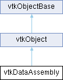

|
Etrek
|
|
Etrek
|
hierarchical representation to use with vtkPartitionedDataSetCollection More...
#include <vtkDataAssembly.h>

Public Types | |
| enum | TraversalOrder { DepthFirst = 0 , BreadthFirst } |
Public Member Functions | |
| vtkTypeMacro (vtkDataAssembly, vtkObject) | |
| void | PrintSelf (ostream &os, vtkIndent indent) override |
| void | Initialize () |
| int | AddNode (const char *name, int parent=0) |
| std::vector< int > | AddNodes (const std::vector< std::string > &names, int parent=0) |
| int | AddSubtree (int parent, vtkDataAssembly *other, int otherParent=0) |
| bool | RemoveNode (int id) |
| std::string | GetNodePath (int id) const |
| int | GetFirstNodeByPath (const char *path) const |
| bool | AddDataSetIndex (int id, unsigned int dataset_index) |
| bool | AddDataSetIndices (int id, const std::vector< unsigned int > &dataset_indices) |
| bool | AddDataSetIndexRange (int id, unsigned int index_start, int count) |
| bool | RemoveDataSetIndex (int id, unsigned int dataset_index) |
| bool | RemoveAllDataSetIndices (int id, bool traverse_subtree=true) |
| int | FindFirstNodeWithName (const char *name, int traversal_order=vtkDataAssembly::TraversalOrder::DepthFirst) const |
| std::vector< int > | FindNodesWithName (const char *name, int sort_order=vtkDataAssembly::TraversalOrder::DepthFirst) const |
| std::vector< int > | GetChildNodes (int parent, bool traverse_subtree=true, int traversal_order=vtkDataAssembly::TraversalOrder::DepthFirst) const |
| int | GetNumberOfChildren (int parent) const |
| int | GetChild (int parent, int index) const |
| int | GetChildIndex (int parent, int child) const |
| int | GetParent (int id) const |
| bool | HasAttribute (int id, const char *name) const |
| std::vector< int > | SelectNodes (const std::vector< std::string > &path_queries, int traversal_order=vtkDataAssembly::TraversalOrder::DepthFirst) const |
| bool | RemapDataSetIndices (const std::map< unsigned int, unsigned int > &mapping, bool remove_unmapped) |
| void | SubsetCopy (vtkDataAssembly *other, const std::vector< int > &selected_branches) |
| void | DeepCopy (vtkDataAssembly *other) |
| bool | InitializeFromXML (const char *xmlcontents) |
| std::string | SerializeToXML (vtkIndent indent) const |
| void | SetRootNodeName (const char *name) |
| const char * | GetRootNodeName () const |
| void | SetNodeName (int id, const char *name) |
| const char * | GetNodeName (int id) const |
| void | SetAttribute (int id, const char *name, const char *value) |
| void | SetAttribute (int id, const char *name, int value) |
| void | SetAttribute (int id, const char *name, unsigned int value) |
| void | SetAttribute (int id, const char *name, vtkIdType value) |
| bool | GetAttribute (int id, const char *name, const char *&value) const |
| bool | GetAttribute (int id, const char *name, int &value) const |
| bool | GetAttribute (int id, const char *name, unsigned int &value) const |
| bool | GetAttribute (int id, const char *name, vtkIdType &value) const |
| const char * | GetAttributeOrDefault (int id, const char *name, const char *default_value) const |
| int | GetAttributeOrDefault (int id, const char *name, int default_value) const |
| unsigned int | GetAttributeOrDefault (int id, const char *name, unsigned int default_value) const |
| vtkIdType | GetAttributeOrDefault (int id, const char *name, vtkIdType default_value) const |
| void | Visit (vtkDataAssemblyVisitor *visitor, int traversal_order=vtkDataAssembly::TraversalOrder::DepthFirst) const |
| void | Visit (int id, vtkDataAssemblyVisitor *visitor, int traversal_order=vtkDataAssembly::TraversalOrder::DepthFirst) const |
| std::vector< unsigned int > | GetDataSetIndices (int id, bool traverse_subtree=true, int traversal_order=vtkDataAssembly::TraversalOrder::DepthFirst) const |
| std::vector< unsigned int > | GetDataSetIndices (const std::vector< int > &ids, bool traverse_subtree=true, int traversal_order=vtkDataAssembly::TraversalOrder::DepthFirst) const |
| Public Member Functions inherited from vtkObject | |
| vtkBaseTypeMacro (vtkObject, vtkObjectBase) | |
| virtual void | DebugOn () |
| virtual void | DebugOff () |
| bool | GetDebug () |
| void | SetDebug (bool debugFlag) |
| virtual void | Modified () |
| virtual vtkMTimeType | GetMTime () |
| void | PrintSelf (ostream &os, vtkIndent indent) override |
| void | RemoveObserver (unsigned long tag) |
| void | RemoveObservers (unsigned long event) |
| void | RemoveObservers (const char *event) |
| void | RemoveAllObservers () |
| vtkTypeBool | HasObserver (unsigned long event) |
| vtkTypeBool | HasObserver (const char *event) |
| vtkTypeBool | InvokeEvent (unsigned long event) |
| vtkTypeBool | InvokeEvent (const char *event) |
| std::string | GetObjectDescription () const override |
| unsigned long | AddObserver (unsigned long event, vtkCommand *, float priority=0.0f) |
| unsigned long | AddObserver (const char *event, vtkCommand *, float priority=0.0f) |
| vtkCommand * | GetCommand (unsigned long tag) |
| void | RemoveObserver (vtkCommand *) |
| void | RemoveObservers (unsigned long event, vtkCommand *) |
| void | RemoveObservers (const char *event, vtkCommand *) |
| vtkTypeBool | HasObserver (unsigned long event, vtkCommand *) |
| vtkTypeBool | HasObserver (const char *event, vtkCommand *) |
| template<class U, class T> | |
| unsigned long | AddObserver (unsigned long event, U observer, void(T::*callback)(), float priority=0.0f) |
| template<class U, class T> | |
| unsigned long | AddObserver (unsigned long event, U observer, void(T::*callback)(vtkObject *, unsigned long, void *), float priority=0.0f) |
| template<class U, class T> | |
| unsigned long | AddObserver (unsigned long event, U observer, bool(T::*callback)(vtkObject *, unsigned long, void *), float priority=0.0f) |
| vtkTypeBool | InvokeEvent (unsigned long event, void *callData) |
| vtkTypeBool | InvokeEvent (const char *event, void *callData) |
| virtual void | SetObjectName (const std::string &objectName) |
| virtual std::string | GetObjectName () const |
| Public Member Functions inherited from vtkObjectBase | |
| const char * | GetClassName () const |
| virtual vtkTypeBool | IsA (const char *name) |
| virtual vtkIdType | GetNumberOfGenerationsFromBase (const char *name) |
| virtual void | Delete () |
| virtual void | FastDelete () |
| void | InitializeObjectBase () |
| void | Print (ostream &os) |
| void | Register (vtkObjectBase *o) |
| virtual void | UnRegister (vtkObjectBase *o) |
| int | GetReferenceCount () |
| void | SetReferenceCount (int) |
| bool | GetIsInMemkind () const |
| virtual void | PrintHeader (ostream &os, vtkIndent indent) |
| virtual void | PrintTrailer (ostream &os, vtkIndent indent) |
| virtual bool | UsesGarbageCollector () const |
Static Public Member Functions | |
| static vtkDataAssembly * | New () |
| static int | GetRootNode () |
| static bool | IsNodeNameValid (const char *name) |
| static std::string | MakeValidNodeName (const char *name) |
| static bool | IsNodeNameReserved (const char *name) |
| Static Public Member Functions inherited from vtkObject | |
| static vtkObject * | New () |
| static void | BreakOnError () |
| static void | SetGlobalWarningDisplay (vtkTypeBool val) |
| static void | GlobalWarningDisplayOn () |
| static void | GlobalWarningDisplayOff () |
| static vtkTypeBool | GetGlobalWarningDisplay () |
| Static Public Member Functions inherited from vtkObjectBase | |
| static vtkTypeBool | IsTypeOf (const char *name) |
| static vtkIdType | GetNumberOfGenerationsFromBaseType (const char *name) |
| static vtkObjectBase * | New () |
| static void | SetMemkindDirectory (const char *directoryname) |
| static bool | GetUsingMemkind () |
Additional Inherited Members | |
| Protected Member Functions inherited from vtkObject | |
| void | RegisterInternal (vtkObjectBase *, vtkTypeBool check) override |
| void | UnRegisterInternal (vtkObjectBase *, vtkTypeBool check) override |
| void | InternalGrabFocus (vtkCommand *mouseEvents, vtkCommand *keypressEvents=nullptr) |
| void | InternalReleaseFocus () |
| Protected Member Functions inherited from vtkObjectBase | |
| virtual void | ReportReferences (vtkGarbageCollector *) |
| vtkObjectBase (const vtkObjectBase &) | |
| void | operator= (const vtkObjectBase &) |
| Static Protected Member Functions inherited from vtkObjectBase | |
| static vtkMallocingFunction | GetCurrentMallocFunction () |
| static vtkReallocingFunction | GetCurrentReallocFunction () |
| static vtkFreeingFunction | GetCurrentFreeFunction () |
| static vtkFreeingFunction | GetAlternateFreeFunction () |
| Protected Attributes inherited from vtkObject | |
| bool | Debug |
| vtkTimeStamp | MTime |
| vtkSubjectHelper * | SubjectHelper |
| std::string | ObjectName |
| Protected Attributes inherited from vtkObjectBase | |
| std::atomic< int32_t > | ReferenceCount |
| vtkWeakPointerBase ** | WeakPointers |
hierarchical representation to use with vtkPartitionedDataSetCollection
vtkDataAssembly is a mechanism to represent hierarchical organization of items (or vtkPartitionedDataSet instances) in a vtkPartitionedDataSetCollection. vtkPartitionedDataSetCollection is similar to a vtkMultiBlockDataSet since it provides a means for putting together multiple non-composite datasets. However, vtkPartitionedDataSetCollection itself doesn't provide any mechanism to define relationships between items in the collections. That is done using vtkDataAssembly.
At its core, vtkDataAssembly is simply a tree of nodes starting with the root node. Each node has a unique id and a string name (names need not be unique). On initialization with vtkDataAssembly::Initialize, an empty tree with a root node is created. The root node's id and name can be obtained using vtkDataAssembly::GetRootNode and vtkDataAssembly::GetRootNodeName. The root node's id is fixed (vtkDataAssembly::GetRootNode), however the name can be changed using vtkDataAssembly::SetRootNodeName.
Child nodes can be added using vtkDataAssembly::AddNode or vtkDataAssembly::AddNodes, each of which returns the ids for every child node added. A non-root node can be removed using vtkDataAssembly::RemoveNode.
Each node in the tree (including the root node) can have associated dataset indices. For a vtkDataAssembly associated with a vtkPartitionedDataSetCollection, these indices refer to the item index, or partitioned-dataset-index for items in the collection. Dataset indices can be specified using vtkDataAssembly::AddDataSetIndex, vtkDataAssembly::AddDataSetIndices and removed using vtkDataAssembly::RemoveDataSetIndex, vtkDataAssembly::RemoveAllDataSetIndices. vtkDataAssembly::GetDataSetIndices provides a mechanism to get the database indices associated with a node, and optionally, the entire subtree rooted at the chosen node.
Each node in the vtkDataAssembly is assigned a unique id. vtkDataAssembly::FindFirstNodeWithName and vtkDataAssembly::FindNodesWithName can be used to get the id(s) for node(s) with given name.
vtkDataAssembly::SelectNodes provides a more flexible mechanism to find nodes using name-based queries. Section Supported Path Queries covers supported queries.
vtkDataAssemblyVisitor defines a visitor API. An instance of a concretized vtkDataAssemblyVisitor subclass can be passed to vtkDataAssembly::Visit to traverse the data-assembly hierarchy either in depth-first or breadth-first order.
vtkDataAssembly::SelectNodes can be used find nodes that match the specified query (or queries) using XPath 1.0 syntax.
For example:
The separation of dataset storage (vtkPartitionedDataSetCollection) and organization (vtkDataAssembly) enables development of algorithms that can expose APIs that are not tightly coupled to dataset storage. Together, vtkPartitionedDataSetCollection and vtkDataAssembly can be thought of as a different way of organizing data that was previously organized as a vtkMultiBlockDataSet. The advantage of the this newer approach is that filters can support specifying parameters using paths or path queries rather than composite indices. The composite indices suffered from the fact that they made no sense except for the specific vtkMultiBlockDataSet they were applied too. Thus, if the filters input was changed, the composite ids rarely made any sense and needed to be updated. Paths and path queries, however, do not suffer from this issue.
| bool vtkDataAssembly::AddDataSetIndex | ( | int | id, |
| unsigned int | dataset_index ) |
Add a dataset index to a node. The node id can refer to any valid node in the assembly, including the root.
While the same dataset can be added multiple times in the assembly, it cannot be added multiple times to the same node. Additional adds will fail.
| bool vtkDataAssembly::AddDataSetIndexRange | ( | int | id, |
| unsigned int | index_start, | ||
| int | count ) |
Same as AddDataSetIndices except this supports adding a contiguous range of dataset indices in one go.
@ returns true if any dataset index was successfully added.
| bool vtkDataAssembly::AddDataSetIndices | ( | int | id, |
| const std::vector< unsigned int > & | dataset_indices ) |
Same as AddDataSetIndex except supports adding multiple dataset indices in one go. Note, a dataset index only gets added once.
| int vtkDataAssembly::AddNode | ( | const char * | name, |
| int | parent = 0 ) |
Adds a node to the assembly with the given name and returns its id. parent is the id for the parent node which defaults to the root node id (i.e. GetRootNode).
If parent is invalid, the add will fail.
| std::vector< int > vtkDataAssembly::AddNodes | ( | const std::vector< std::string > & | names, |
| int | parent = 0 ) |
Same as AddNode except allows adding multiple nodes in one go.
If parent is invalid, the add will fail.
| int vtkDataAssembly::AddSubtree | ( | int | parent, |
| vtkDataAssembly * | other, | ||
| int | otherParent = 0 ) |
Add a subtree by copy the nodes from another tree starting with the specified parent index.
| void vtkDataAssembly::DeepCopy | ( | vtkDataAssembly * | other | ) |
Deep copy the other.
| int vtkDataAssembly::FindFirstNodeWithName | ( | const char * | name, |
| int | traversal_order = vtkDataAssembly::TraversalOrder::DepthFirst ) const |
Finds first node that is encountered in a breadth first traversal of the assembly with the given name.
| std::vector< int > vtkDataAssembly::FindNodesWithName | ( | const char * | name, |
| int | sort_order = vtkDataAssembly::TraversalOrder::DepthFirst ) const |
Finds all nodes with the given name. The nodes can be ordered depth first or breadth first, based on the sort_order flag.
| bool vtkDataAssembly::GetAttribute | ( | int | id, |
| const char * | name, | ||
| const char *& | value ) const |
Get an attribute value. Returns true if a value was provided else false.
| const char * vtkDataAssembly::GetAttributeOrDefault | ( | int | id, |
| const char * | name, | ||
| const char * | default_value ) const |
Get an attribute value. Returns the value associated with the node or the provided default value.
| int vtkDataAssembly::GetChild | ( | int | parent, |
| int | index ) const |
Returns the id for a child not at the given index, if valid, otherwise -1.
| int vtkDataAssembly::GetChildIndex | ( | int | parent, |
| int | child ) const |
Returns the index for a child under a given. -1 if invalid.
| std::vector< int > vtkDataAssembly::GetChildNodes | ( | int | parent, |
| bool | traverse_subtree = true, | ||
| int | traversal_order = vtkDataAssembly::TraversalOrder::DepthFirst ) const |
Returns ids for all child nodes.
If traverse_subtree is true (default), recursively builds the child node list. The traversal order can be specified using traversal_order flag; defaults to depth-first.
| std::vector< unsigned int > vtkDataAssembly::GetDataSetIndices | ( | int | id, |
| bool | traverse_subtree = true, | ||
| int | traversal_order = vtkDataAssembly::TraversalOrder::DepthFirst ) const |
Returns the dataset indices associated with the node.
If traverse_subtree is true (default), recursively builds the dataset indices list for the node and all its child nodes. Note, a dataset index will only appear once in the output even if it is encountered on multiple nodes in the subtree.
When traverse_subtree is true, the traversal order can be specified using traversal_order. Defaults to depth-first.
| int vtkDataAssembly::GetFirstNodeByPath | ( | const char * | path | ) | const |
Return a node id given the path. Returns -1 if path is not valid.
| std::string vtkDataAssembly::GetNodePath | ( | int | id | ) | const |
Returns the path for a node.
| int vtkDataAssembly::GetNumberOfChildren | ( | int | parent | ) | const |
Returns the number of child nodes.
| int vtkDataAssembly::GetParent | ( | int | id | ) | const |
Returns the id for the parent node, if any. Returns -1 if the node is invalid or has no parent (i.e. is the root node).
|
inlinestatic |
Returns the ID for the root node. This always returns 0.
| bool vtkDataAssembly::HasAttribute | ( | int | id, |
| const char * | name ) const |
Returns true if attribute with the given name is present on the chosen node.
| void vtkDataAssembly::Initialize | ( | ) |
Initializes the data-assembly. When a new vtkDataAssembly instance is created, it is in initialized form and it is not required to call this method to initialize it.
| bool vtkDataAssembly::InitializeFromXML | ( | const char * | xmlcontents | ) |
Initializes a data-assembly using an XML representation of the assembly. Returns true if the initialization was successful, otherwise the assembly is set a clean state and returns false.
|
static |
Returns true for node names that are reserved.
|
static |
Validates a node name.
|
static |
Converts any string to a string that is a valid node name. This is done by simply discarding any non-supported character. Additionally, if the first character is not a "_" or an alphabet, then the "_" is prepended.
|
overridevirtual |
Methods invoked by print to print information about the object including superclasses. Typically not called by the user (use Print() instead) but used in the hierarchical print process to combine the output of several classes.
Reimplemented from vtkObjectBase.
| bool vtkDataAssembly::RemapDataSetIndices | ( | const std::map< unsigned int, unsigned int > & | mapping, |
| bool | remove_unmapped ) |
Remap dataset indices. mapping is map where the key is the old index and value is the new index. If remove_unmapped is true, then any dataset not in the map will be removed.
| bool vtkDataAssembly::RemoveAllDataSetIndices | ( | int | id, |
| bool | traverse_subtree = true ) |
Clears all dataset indices from the node.
If traverse_subtree is true (default), recursively removes all dataset indices from all the child nodes.
| bool vtkDataAssembly::RemoveDataSetIndex | ( | int | id, |
| unsigned int | dataset_index ) |
Removes a dataset index from a node.
| bool vtkDataAssembly::RemoveNode | ( | int | id | ) |
Removes a node from the assembly. The node identified by the id and all its children are removed.
Root node cannot be removed.
| std::vector< int > vtkDataAssembly::SelectNodes | ( | const std::vector< std::string > & | path_queries, |
| int | traversal_order = vtkDataAssembly::TraversalOrder::DepthFirst ) const |
Returns ids for nodes matching the path_queries. See Section Supported Path Queries for supported query expressions.
Will return an empty vector is no nodes match the requested query.
| std::string vtkDataAssembly::SerializeToXML | ( | vtkIndent | indent | ) | const |
Saves the data-assembly as a XML.
| void vtkDataAssembly::SetAttribute | ( | int | id, |
| const char * | name, | ||
| const char * | value ) |
Set an attribute. Will replace an existing attribute with the same name if present.
| void vtkDataAssembly::SetNodeName | ( | int | id, |
| const char * | name ) |
Get/Set a node's name. If node id is invalid, SetNodeName will raise an error; GetNodeName will also raise an error and return nullptr.
SetNodeName will raise an error if the name is not valid. Name cannot be empty or nullptr.
|
inline |
Get/Set root node name. Defaults to DataAssembly.
| void vtkDataAssembly::SubsetCopy | ( | vtkDataAssembly * | other, |
| const std::vector< int > & | selected_branches ) |
Create a deep-copy of other by only passing the chosen branches. All other branches of the tree will be pruned. Note this method never affects the depth of the selected branches or dataset indices attached to any of the nodes in pruned output.
|
inline |
Visit each node in the assembly for processing. The traversal order can be specified using traversal_order which defaults to depth-first.